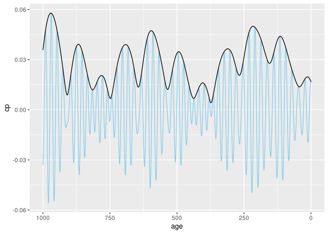

Easily calculate precession and obliquity from an astronomical solution (AS, defaults to ZB18a from Zeebe and Lourens (2019)) and assumed or reconstructed values for tidal dissipation (Td) and dynamical ellipticity (Ed). This is a translation and adaptation of the C-code in the supplementary material to Zeebe and Lourens (2022), with further details on the methodology described in Zeebe (2022). The name of the C-routine is snvec, which refers to the key units of computation: spin vector s and orbit normal vector n.
Installation
You can install snvecR like so:
install.packages("snvecR")To use the development version of the package, use:
remotes::install_github("japhir/snvecR")Example
Here’s the main function that does the work in action:
library(snvecR)
solution <- snvec()
#> ℹ The astronomical solution full-ZB18a has not been downloaded.
#> ℹ Reading 'full-ZB18a.dat' from website <http://www.soest.hawaii.edu/oceanography/faculty/zeebe_files/Astro/PrecTilt/OS/ZB18a/ems-plan3.dat>.
#> ℹ Calculating helper columns.
#> ℹ The cache directory is '/home/japhir/.cache/R/snvecR'.
#> ℹ Saved 'full-ZB18a.dat' to cache.
#> ℹ Saved cleaned-up 'full-ZB18a.csv' to cache.
#> → Saved solution with helper columns 'full-ZB18a.rds' to cache.
#> This is snvecR VERSION: 3.9.0 2024-02-29
#> Richard E. Zeebe
#> Ilja J. Kocken
#>
#> Integration parameters:
#> • `tend` = -1000 kyr
#> • `ed` = 1
#> • `td` = 0
#> • `astronomical_solution` = "full-ZB18a"
#> • `os_ref_frame` = "HCI"
#> • `os_omt` = defaulting to 75.594
#> • `os_inct` = defaulting to 7.155
#> • `tres` = -0.4 kyr
#> • `atol` = 1e-05
#> • `rtol` = 0
#> • `solver` = "vode"
#> ℹ started at "2024-03-04 13:39:55.132105"
#> Final values:
#> • s[1][2][3]: 0.404184487124565, -0.0537555129057148, and 0.913036138471423
#> • s-error = |s|-1: -5.51290422495798e-05
#> Final values:
#> • obliquity: 0.413060472710089 rad
#> • precession: -0.562357122261026 rad
#> ℹ stopped at "2024-03-04 13:40:00.516361"
#> ℹ total duration: 5.38ssee ?snvec for further documentation.
Here we create a quick plot of the calculated climatic precession with the eccentricity envelope:
library(ggplot2)
solution |>
ggplot(aes(x = time, y = cp)) +
labs(x = "Time (kyr)", y = "(-)", colour = "Orbital Element") +
# plot climatic precession
geom_line(aes(colour = "Climatic Precession")) +
# add the eccentricity envelope
geom_line(aes(y = ee, colour = "Eccentricity"),
data = get_solution() |> dplyr::filter(time > -1000)) +
scale_color_discrete(type = c("skyblue", "black")) +
theme(legend.position.inside = c(.9, .95))
References
Zeebe, R. E., & Lourens, L. J. (2019). Solar System chaos and the Paleocene–Eocene boundary age constrained by geology and astronomy. Science, 365(6456), 926–929. doi:10.1126/science.aax0612.
Zeebe, R. E., & Lourens, L. J. (2022). A deep-time dating tool for paleo-applications utilizing obliquity and precession cycles: The role of dynamical ellipticity and tidal dissipation. Paleoceanography and Paleoclimatology, e2021PA004349. doi:10.1029/2021PA004349.
Zeebe, R. E. (2022). Reduced Variations in Earth’s and Mars’ Orbital Inclination and Earth’s Obliquity from 58 to 48 Myr ago due to Solar System Chaos. The Astronomical Journal, 164(3), doi:10.3847/1538-3881/ac80f8.
Wikipedia page on Orbital Elements: https://en.wikipedia.org/wiki/Orbital_elements